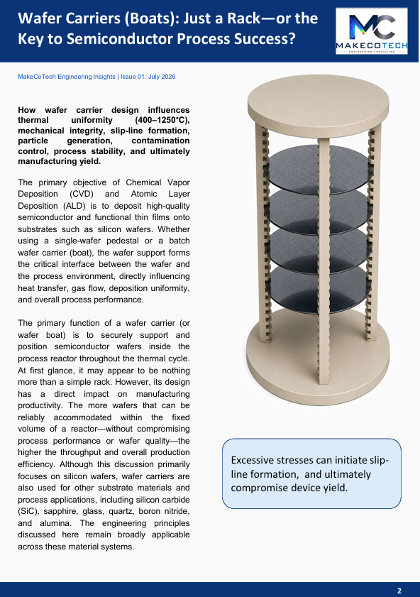
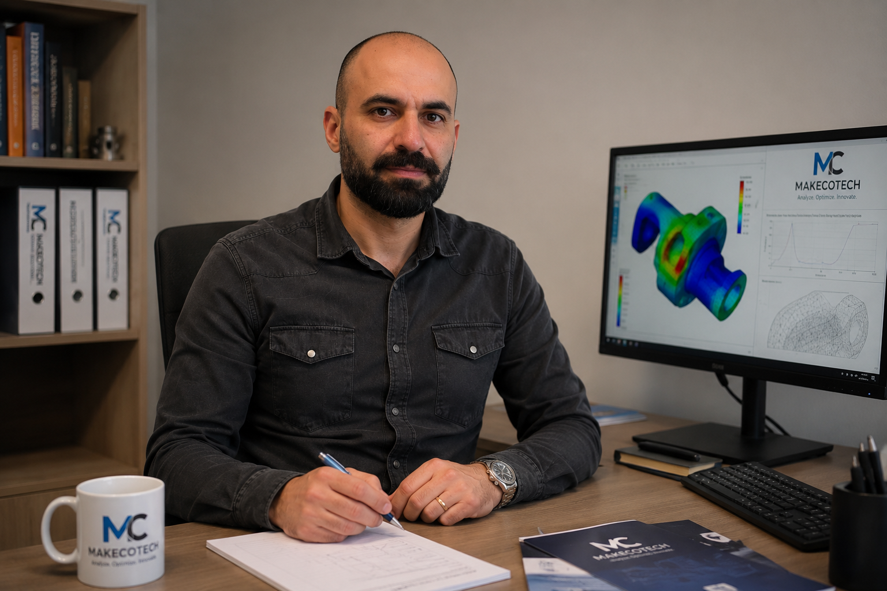

⚙
Product Development
Concept development, design optimization, troubleshooting, validation and root cause analysis.
Advanced Engineering & Simulation Consulting
Based in Belgium, MakeCoTech helps companies across Belgium, the Netherlands, Luxembourg, Germany and the wider Benelux region solve complex engineering challenges through advanced engineering consultancy, finite element analysis, nonlinear material modeling, thermal analysis and product development support.
Our Expertise
Concept development, design optimization, troubleshooting, validation and root cause analysis.
Structural, thermal, thermo-mechanical, buckling, vibration, fatigue and nonlinear simulations.
Development and calibration of advanced material models including plasticity, creep, damage and failure.
Sheet metal forming, stamping, deep drawing, formability, springback prediction and process optimization.
Hot-end exhaust systems, after-treatment development, thermal durability and product validation.
High-temperature furnace (CVD/ALD) systems, wafer carriers, quartz, SiC and ceramic component analysis.
Engineering Insights

Issue 01 · July 2026
A technical article explaining how wafer carrier design influences thermal uniformity, mechanical integrity, slip-line formation, particle generation, contamination control, process stability and semiconductor manufacturing yield.

About MakeCoTech
MakeCoTech combines hands-on engineering development experience with advanced simulation expertise to support companies from concept design to validation. We deliver reliable analyses, practical design recommendations and measurable engineering value.

Meet the Founder
Kianoosh Marandi is a mechanical engineer and simulation specialist with more than 18 years of international experience in engineering development, advanced simulations and product innovation.
After obtaining his Master's degree in Mechanical Engineering, he worked as a Design Engineer for two years before pursuing a PhD at the National University of Singapore, where he graduated in 2012. His doctoral research focused on the nonlinear behaviour and advanced constitutive modelling of metallic composites and engineering materials.
Following his PhD, he moved to Belgium to work as a researcher and subsequently spent more than a decade in the automotive industry, contributing to the development of advanced automotive systems. His work covered sheet metal forming simulations, nonlinear material formulations, structural and thermal analyses, and product development from concept to validation.
In 2022, he joined ASM in the semiconductor industry, where he contributed to the development of advanced high-temperature furnace systems and critical components made from quartz, silicon carbide, graphite and silicon, designed to meet demanding performance and reliability requirements.
Through MakeCoTech, Kianoosh aims to share his multidisciplinary expertise with a broader range of companies, helping them solve complex engineering challenges, accelerate innovation and transform ideas into reliable, high-performance products.
Start a Project
Contact MakeCoTech to discuss your analysis, design or development challenge.